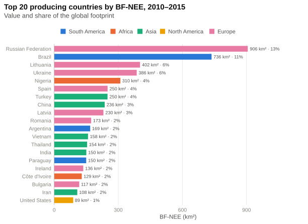

Countries
Producing countries where natural ecosystem loss is attributed to German final demand
Plantations no longer count as natural (v3.1, approximation). Plantations (IUCN 14.3) and artificial aquatic classes are now treated as anthropogenic. Until the full pipeline can be rerun, natural ecosystem loss and BF-NEE are derived from the v3 results by removing these classes; the exact values lie between the values shown and the v3 values (Method). The interactive map still shows the v3 values.
Largest footprints
Concentration
Trajectories
What drives a country’s footprint?
BF-NEE of a country is its agriculture-constrained loss multiplied by its attribution weight \sum_c S_c P_c. Countries can rank high because they lose a lot of ecosystems, because a large share of their expanding crops ends up in German final demand – or both.